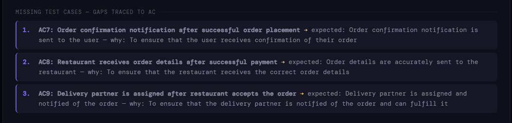
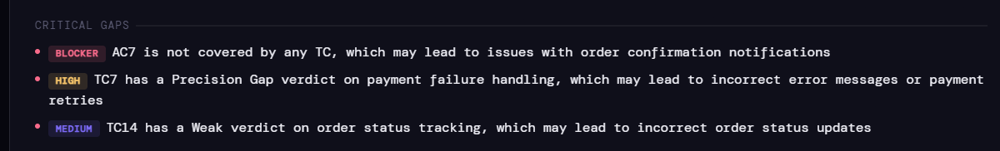

Built on Scar Tissue - Part 2: So I Built Release Risk Intelligence
So I Built Release Risk Intelligence in late 2024 - What the reviewer does, what it catches, and what building it keeps teaching me.
This is Part 2 of Built on Scar Tissue - an ongoing series on encoding experienced QA thinking into AI. If you haven’t read Part 1 yet, start there - Built on Scar Tissue – Part 1. This piece assumes you have.
"Knowledge is of no value unless you put it into practice."
- Anton Chekhov
The first time I ran it on one of my freelancing gigs - a real suite, not a test, not a demo, but a real sprint, a real feature, a real team - the Release Risk Intelligence agent flagged three things in under a minute that the team hadn't caught in two days of review.
Nobody said anything for a moment.
Then someone asked: how did it know to look there?
That question is what this piece is about.
Not a generator. But something harder to build.
Building a generator is a largely solved problem. You describe a feature, the model returns test cases shaped like test cases - structured, labelled, covering the paths that a complete suite is supposed to cover. Genuinely useful. Genuinely limited. Part 1 covered why.
Building a reviewer required something structurally different. Not a model that recognises the shape of a test suite, but one that questions the thinking behind it. Pattern recognition and adversarial reasoning are not the same cognitive task - and the gap between them is where 15 years of QA instinct had to be translated into something a model could actually work with.
The Release Risk Intelligence Reviewer takes a user story, acceptance criteria, and est cases as input. It works through the suite the way a senior QA lead does in a serious review - not checking whether cases are nice to read or well-written, but asking whether the right things are being tested for at all. It looks for what the suite is assuming about user behaviour, system boundaries, and integration dependencies. It identifies where those assumptions are likely to break down under real-world conditions. It then returns a structured verdict - not a score in isolation, not a pass/fail, but a reasoned assessment of which gaps carry risk, why they carry it, and what needs to happen before sign-off.
One constraint worth naming honestly: AI-driven review cannot be deterministic. The depth and focus of reasoning shifts with model version, token budget, and context length. Based on industrial observation with even paid models, it may even vary based on workload on the model and ongoing tuning by the provider. This is not a reason to avoid being deterministic - it is a reason to design the output as a thinking aid rather than a decision-maker. The agent surfaces what deserves scrutiny. The human decides what to do about such highlights. The person continues to have the decision making authority on how to proceed. What changes is that the thinking becomes harder to skip.
A real suite, a familiar scenario… and gaps that will surprise you
To show what the reviewer actually does, here is a scenario every person reading this has likely faced - placing a food order on a delivery app. Browsing restaurants, adding items to cart, applying a coupon, selecting a payment method, placing the order, tracking delivery.
Simple enough that a non-technical CEO understands it immediately. Complex enough underneath that the gaps are real, consequential, and invisible inside a well-written suite.
The test suite contained fifteen cases. Carefully written - cart behaviour, coupon validation, payment methods, failure handling, order history, delivery tracking, closed restaurant behaviour. Reviewed against the acceptance criteria, thirteen of fifteen requirements had coverage. It looked thorough. It looked ready.
Release Risk Intelligence returned a Conditional Approval. Not because the test cases were badly written. But because the thinking behind them had focused on the customer journey and had forgotten everyone else in the system.
What the reviewer saw that the suite didn’t
The most distinctive thing about the reviewer’s output is not what it flags. It is how it thinks about who is affected.
Multiple stakeholder perspectives. Five different readings of the same fifteen test cases. And the gaps that emerged were not subtle.
The restaurant owner flagged something immediately: there is no test to verify that the restaurant actually receives the order details after successful payment. The suite confirmed that the customer sees a confirmation screen. It never asked whether the order reached the kitchen! In a real system, these are two separate events - a payment gateway confirming a transaction, and an order management system routing that order to the correct restaurant. The suite assumed they were the same. They are not always. With most well-written systems having the right decoupling of responsibilities, there are many separate backend services taking up different responsibilities. Incidentally, most End-to-End test suites tend to only test the customer journey and not the business journey.
The delivery partner scored 60 out of 100 - the lowest of any persona. No test verified that the delivery partner receives the order assignment. No test confirmed that the address the delivery partner receives matches the address the customer selected at checkout. The suite tested the customer’s view of the delivery address. It never tested the downstream journey of that address through the system to the person who actually needs it. Sometimes this could be a simple API call, but most End-to-End test cases miss such confirmations since they tend to focus only on the end customer’s user journey..
The payment operations specialist raised the audit trail. The test suite covered payment success and payment failure from the customer’s perspective - confirmation shown, error message shown. It never confirmed whether the payment transaction was accurately logged, whether the payment record would survive a reconciliation query, whether a refund scenario would trace back correctly, or whether there were audits of payment-related actions. In any system that processes real money, recording a financial transaction is not an edge case - it is often the core reason why the technology is being put together in the first place. Further, not recording a payment transaction in an auditable manner is a compliance exposure that can result in the loss of a business licence.
Separately, three acceptance criteria had no test coverage at all. In light of the above, one might even excuse this as a “mere” hygiene issue. However, trusting AI-generated test suites blindly without verifying whether the acceptance criteria are even covered can result in a good-looking but tragically incomplete test suite.
What was missing
AC7 - the user receives an order confirmation notification after successful payment. The suite confirmed the confirmation screen appeared. It never tested whether the notification was actually sent and received.
AC8 - the restaurant receives order details after successful payment. Completely untested. The suite had no case for this at all.
AC9 - a delivery partner is assigned after the restaurant accepts the order. Also completely untested. The entire downstream fulfilment chain - from restaurant acceptance to partner assignment - had no representation in the suite.

Fifteen good-looking, seemingly comprehensive test cases. The customer journey covered reasonably well. The system that surrounds the customer journey - the restaurant, the delivery partner, the payment audit trail, the notification infrastructure - was largely absent and invisible.
What the verdict looked like

The Conditional Approval is not the agent being cautious. It is the agent saying - here are the exact gaps, here is the business risk each one carries, address these before you ship.
The CEO risk summary translated the technical gaps into language that belongs in a release decision:
A missing notification test means a customer may place an order, receive no confirmation, and assume the order failed - leading to a duplicate order, a support call, or a lost customer.
A missing restaurant receipt test means an order may be paid for and never fulfilled - the customer waits, the restaurant never knew, and the delivery partner is never assigned.
A payment record gap means a reconciliation failure that nobody notices until the finance team runs month-end processes and the numbers don't match.
None of these are exotic failure scenarios. All three are the kind of thing that has happened in production food delivery systems, with real financial, operational, and reputational consequences.
The suite looked done. The thinking behind it hadn’t asked who else was in the room.
Why experienced thinking produces this output
The persona-based review is not a feature I added because it seemed useful. It is an encoding of something every experienced QA lead does instinctively in a serious review - asking not just "does this work for the user" but "does this work for everyone the system touches."
In a food delivery flow, the customer is the most visible stakeholder. But the system has a restaurant receiving an order, a delivery partner receiving an assignment, a payment processor recording a transaction, a support agent resolving failures, and a finance team reconciling payouts. A test suite that only considers the customer’s journey has tested one thread of a system with five or six business threads running in parallel.
The know-how included in the Reviewer is based on fifteen years of watching production failures develop. Not a rule that says “always test all stakeholders.” A pattern recognition that asks - who else is affected if this breaks, and where is their experience represented in this suite? That question is not in any certification curriculum. It is not retrievable from a prompt. It is built from having been in rooms where the order reached the customer and never reached the restaurant, and understanding exactly why.
That reasoning pattern is what the agent runs on.
What this changes for a team
The impact of such a review lands differently depending on where you sit.
A junior tester running this suite through the reviewer before sign-off would have caught all three missing acceptance criteria before anyone raised them in a retrospective. The feedback arrives during the sprint, not after the incident. The learning happens before further cost is incurred.
A senior QA lead reviewing the agent’s output spends their time on judgment - deciding whether the missing delivery partner test is a release blocker or an acceptable risk given the deployment scope, whether the audit trail gap needs an architectural conversation before the next sprint, whether the customer support persona’s 80/100 warrants a closer look at the error message copy. That judgment requires experience. It does not require reading fifteen test cases line by line to find what is missing. A thorough reading of the initial test suite may not uncover such gaps either.
A product manager or CEO reading the risk summary understands the release decision without needing to understand what idempotency means. The language the agent uses - customer frustration, revenue leakage, reconciliation failure, customer churn - is the language of business risk, not of test coverage metrics. That translation is deliberate. Quality decisions belong in release conversations, and release conversations happen in business language.
What building Release Risk Intelligence in my career break has taught me
The most clarifying thing about building the reviewer was not what it could do. It was what it revealed about the nature of experienced QA judgment.
The knowledge a senior QA lead applies in a review is not a checklist. It is a set of questions - shaped by years of watching where systems fail under conditions the specification never imagined. Those questions are almost never written down. They live in the person, apply inconsistently when that person is under delivery pressure, and disappear entirely when that person leaves the team.
Making the implicit explicit - articulating the questions, naming the failure modes, describing the risk reasoning in enough detail that a model could apply it to a suite it had never seen - turned out to be valuable independent of the agent. It clarified what experienced QA judgment actually consists of, in a way that fifteen years of practice had never required me to articulate.
The calibration is still ongoing. Every time a colleague runs the reviewer on a real suite and comes back with where the reasoning fell short, the encoding of that know-how gets sharper. The feedback loop is the build. That is not a limitation of the approach. It is the nature of encoding judgment rather than rules - it improves the same way the human behind it did, through exposure to real cases and honest assessment of where the thinking missed.
This is one problem among several
The reviewer addresses one specific gap in the AI-assisted QA workflow - the absence of adversarial review between test case generation and sign-off. It is one place where experienced QA thinking was missing, and one place where encoding that thinking has made a measurable difference.
But it is one place among several. Stories arrive vague and get tested anyway because nobody knew what questions to ask before the sprint started. Bug reports cycle between QA and development for days not because the defect is complex, but because the report never stated the impact or the evidence clearly. Release sign-offs happen under delivery pressure without the scrutiny they require. Each of these is a place where the thinking that comes from experience is currently absent in the process. Each one is worth building for.
This series continues as that work does - not as a product roadmap, but as a working record of what happens when fifteen years of QA instinct meets problems that AI has made more urgent, not less.
Part 3 is in progress. If you are working through similar problems in AI-assisted QA, release governance, or making experienced thinking scale - I would genuinely like to hear what you are seeing.